A podcast is an audio programme like talk shows we hear on the radio except this is on the web in an episodic format. There are podcasts for pretty much every genre under the sun, from music and arts to science, history & computer science.
Podcasts are a great medium to reach out to people all across the world, share your knowledge, inspire and move others with your words and stories. Alternatively it could also be a nice way to work on your communication skills as a hobby. Podcasts are also used to promote oneself or your products to a very niche audience.
It is absolutely free to register your podcast with Spotify, Google Podcast & iTunes. But they all do need a RSS feed which means we need a hosting provider to store our episodes and make them available by RSS feeds.
Whenever you upload a new episode to the hosting provider, all the subscribers of your RSS feed will be notified of the new episode and people will be able to view your episode on Spotify, iTunes etc.
There may be better hosting providers out there but in this article we will use SoundCloud because it's simple and free which is great price.
Create a free account with SoundCloud and open up the Settings page.
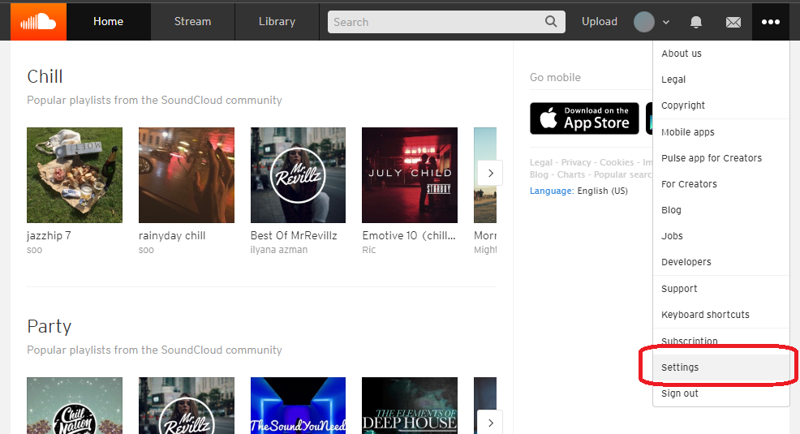
As you can see, there is already a RSS feed associated with your free account. Just fill in the other information. Make sure you verify your SoundCloud account before proceeding.
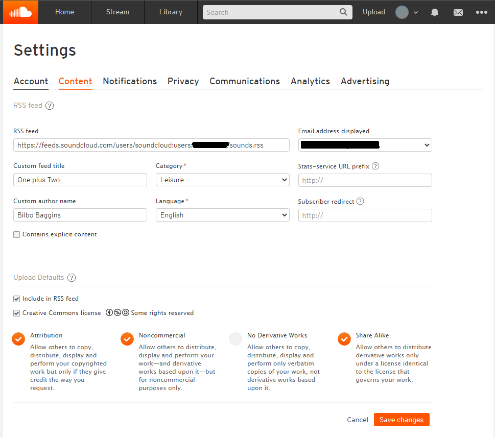
Let's go ahead and create a podcast on Spotify with our SoundCloud RSS feed. Create a free account with Spotify and open up Spotify for Podcasters.
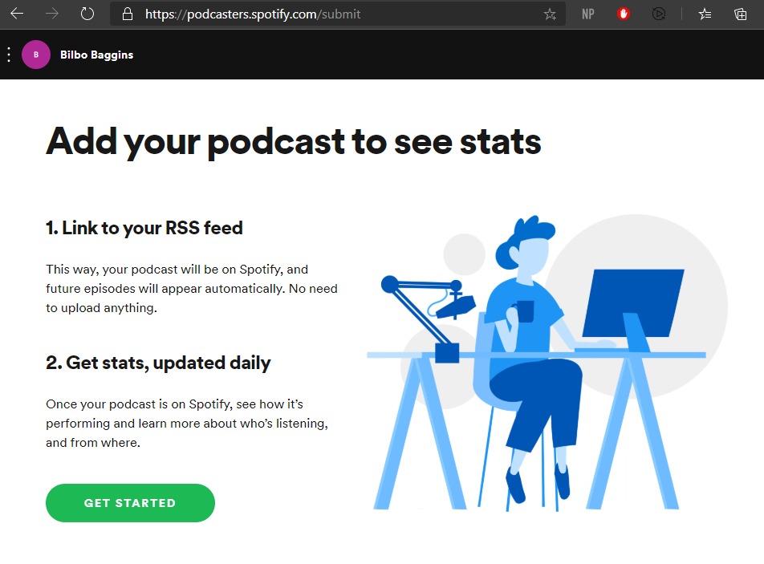
Click on "Get Started" and enter your RSS feed link. Most likely you'll end up with the same error.
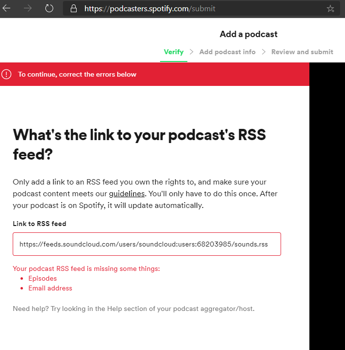
In order to create a podcast, ensure that the prerequisites are completed
Also podcast service providers like Spotify, iTunes has a size requirement on the profile photo like atleast 1000x1000 but not more than 1400x1400. So upload an appropriate podcast label pic.
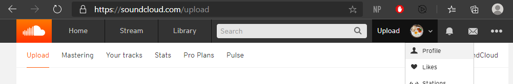
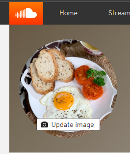
Create a sample into file in any of the common formats like .mp3, .m4a etc using even a basic voice recording app. Alternatively you can use something like Audacity.
Open SoundCloud and click on the "Upload" tab and upload your first episode.
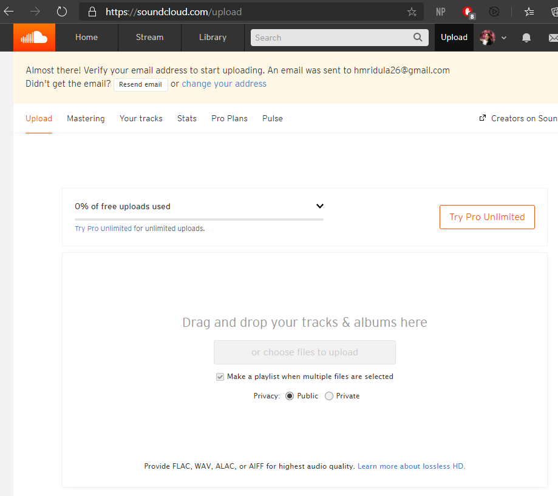
Add the basic information for the track.
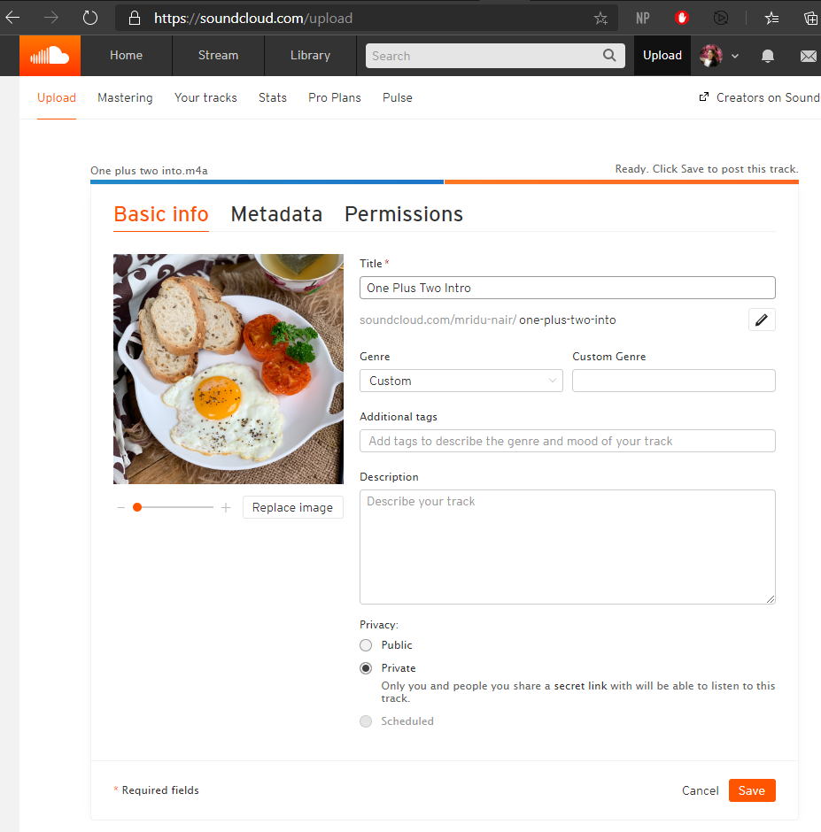
Let's go back to Spotify for Podcasters and attempt to create a podcast again. Now you should see something like this.
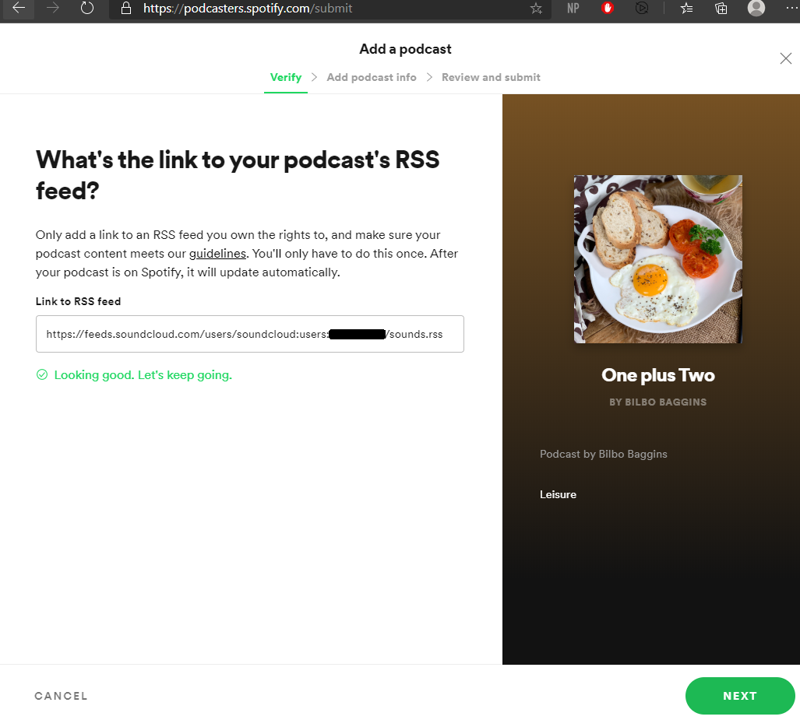
Verify your email address in the next step and enter the verification code. In the next step add the basic podcast info.
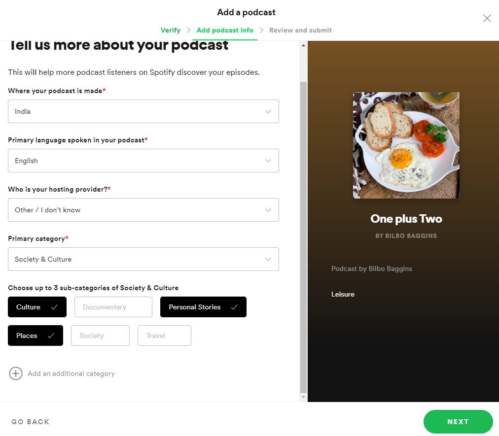
There you go, your podcast is ready!
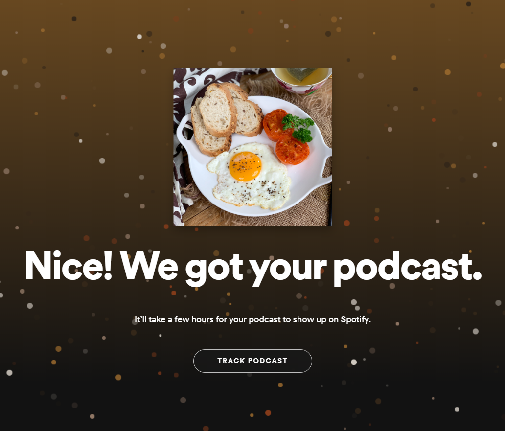
Check back in about an hour and your see a page like this.
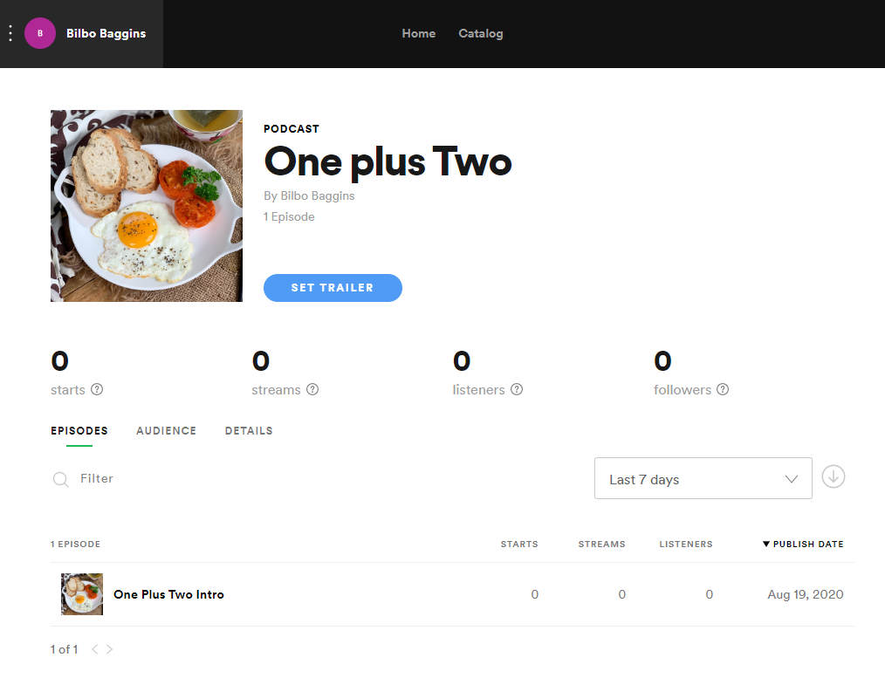
Open up the details tab, and copy the spotify link to your podcast.
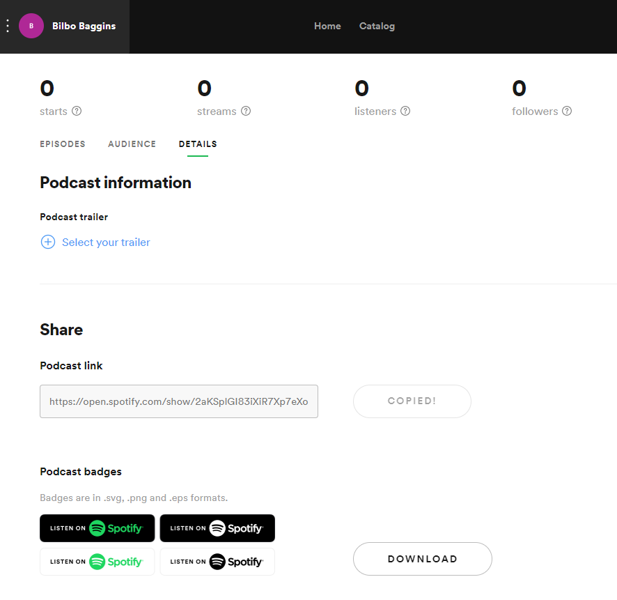
You can share this link and open it on your mobile or laptop. You should be able to view your podcast on Spotify now.
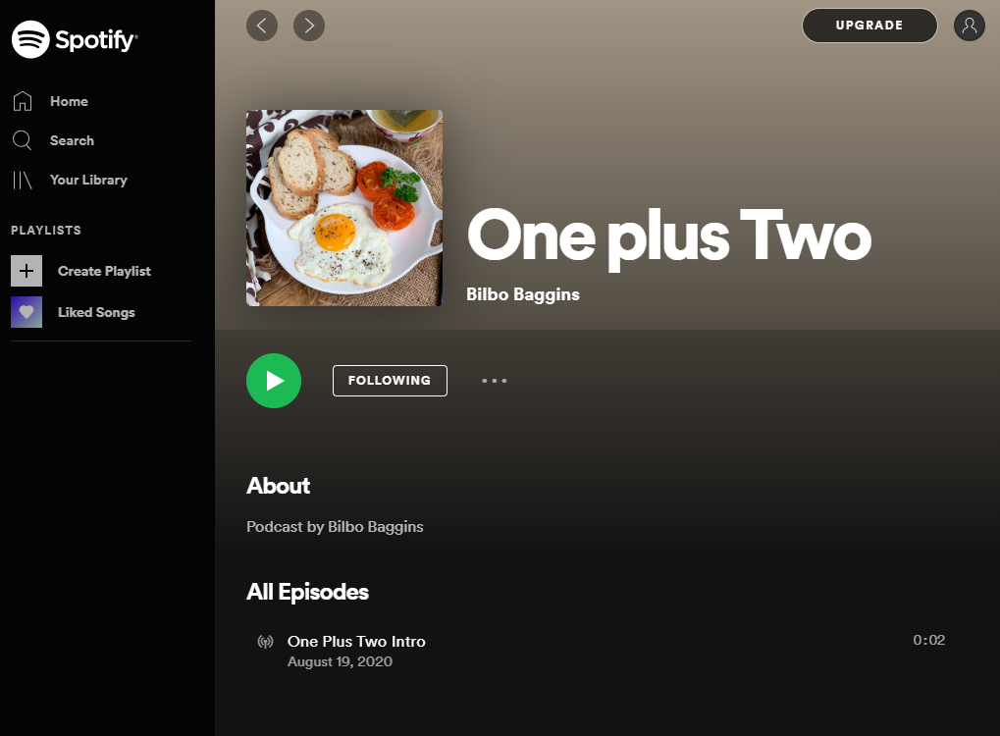